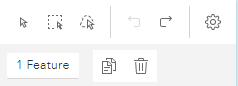
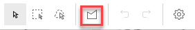
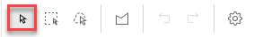
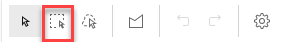
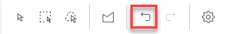
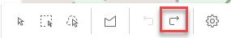
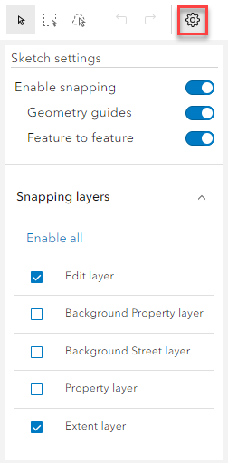
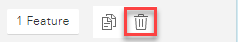

When the map is displayed alongside the Property form additional tools are displayed for you to select properties and, if you are on the Provenances tab, tools to maintain the Provenance Extent.

The bottom layer of tools is only displayed if you have used one of the select tools to select either the property centroid or Provenance Extent.
If you are displaying Provenances and the selected entry does not already have an associated polygon then an extra tool is added to the toolbar to allow you to draw a polygon.

When you first select a property, either from the search results or from the Explorer you will just see the top line in the above diagram. If you click on the property centroid or Provenance Extent then the second line will be displayed.
Map tools (top)
The three select tools may be used to select either the property centroid when you are on the Details tab or the Provenance Extent when you are on the Provenances tab. Once a map object has been selected you may then either move the point (centroid) or alter the shape of the polygon (provenance). See Maintaining Provenance extents for details on polygon editing.
 This tool allows you to click on a single point or polygon on the map. |
 This is also called marquee select. You may use this tool to draw a rectangle on the map to select any points or polygons within the rectangle. |
|
You may use this tool to draw a lasso on the map, with the mouse, to select any points or polygons within the drawn area. |
|
This tool is only available if you are displaying Provenances and the selected provenance entry does not already have an associated polygon. Selecting the tool allows you to draw a polygon on the map. See Maintaining Provenance extents for details on creating your polygon. |
 The Undo tool will cancel the last action made on the map. If you use the Undo tool to cancel a previous action the Redo tool becomes available. |
 The Redo tool will redo the previous Undo. |
When you are drawing on the map to create a polygon, ESU or ASD geometry, snapping to the underlying layers is switched on by default. If you click on the Sketch Settings then you may toggle snapping on and off by clicking Enable snapping.  |
Map Tools (bottom)

The bottom line of the map tools shows the number of objects selected together with a Duplicate and Delete function. Clicking Delete (highlighted in red above) will remove the selected feature from the map.